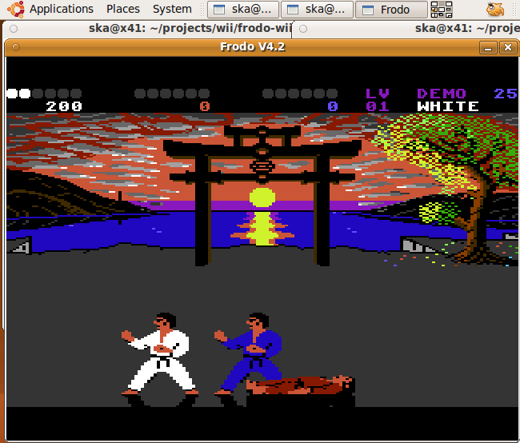
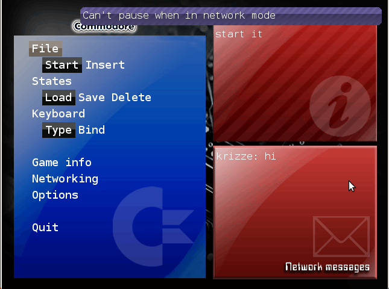

C64 network
The C64 network!
Welcome to c64-network.org! C64-network.org is a Commodore C64 emulator based on the Frodo source code by Christian Bauer. In addition to the features provided by Frodo, it adds network support and a port to the Nintendo Wii.
The statistics page shows current connection statistics for C64-network.org.
Help needed!
The C64 network needs your help! Primarily, I need help with building the source code for Windows and Mac OS, and also web design and graphical design. The list of things to do are:
- Redesigning the UI: I'm a lousy graphics artist, so help me out here. In the new version, you can easily switch between different "gui themes", so copy the default one and make your own and then put it on Wiki page.
- Redesigning the web pages: The static web page (this one) would be nice to get better looking, but primarily the generated statistics web page needs CSS and better looks. It's a simple python script (see network-broker/stats.py in the source code), which you can run by itself to generate the web page (you'll also need png's for the screenshots)
- Builds for Windows and Mac OS: Should be simple on Mac OS, and on windows you should use cygwin.
- Debugging!: Try it out
Mail me at simon.kagstrom@gmail.com if you want to help out.
Features
- All features of the regular Frodo
- Network play!
- A network "broker" where you can connect with other people, as well as sending messages to them
- A Nintendo Wii port
- Source code cleanup
Screenshots


Download
You can download source and binaries for the C64 network here:
The source code is also available for checkout on googlecode.